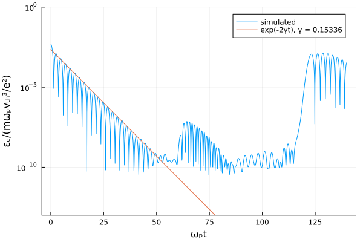
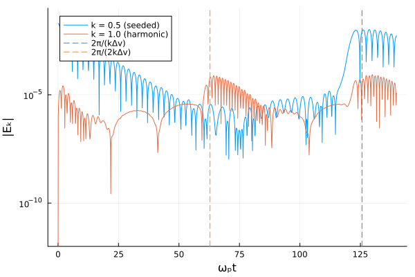
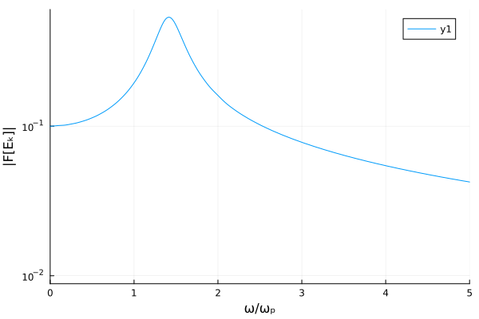
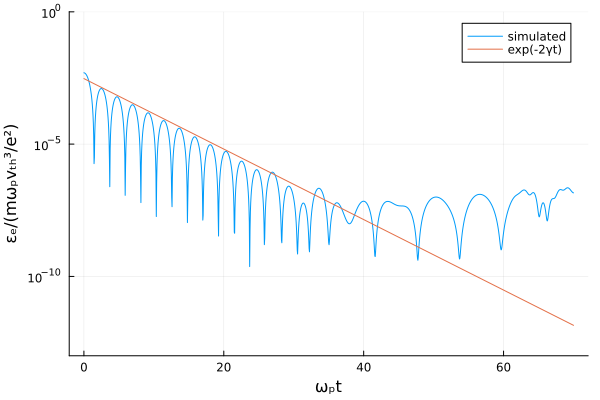
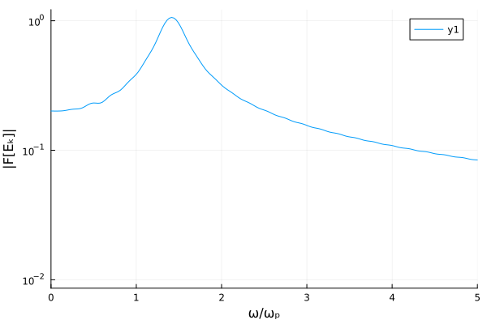
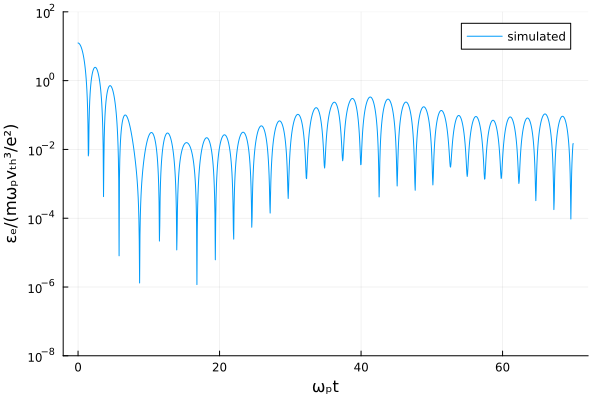

Landau damping
using Plots
using FFTW
using VasilekThe Landau roots, computed. This file used to plot the asymptotic π/(8√2)u³exp(-u²/2) instead, which is not the damping rate of the field: with the u = 1/k below it is 0.3006 at k = 0.5, and what it approximates is the decay rate of the energy, 2γ = 0.30672.
include(joinpath(pkgdir(Vasilek), "test", "dispersion.jl"))
figure(name) = joinpath(@__DIR__, "$name.png")Every run below goes through the package's driver, vlasov_poisson: the same Strang loop, Poisson solve and energy diagnostics the test suite asserts on. This file used to carry three copies of that loop and its own Poisson solve, and had drifted from the asserted runs in the meantime.
landau_f0(v, x, α) = [exp(-u^2/2)/sqrt(2π)*(1 + α*cos(0.5*y)) for u in v, y in x]Linear Landau damping on uniform grid
Here we perform a linear Landau damping test of the scheme in the case of uniform grid.
Initial conditions for electrons are
\[f(x, v) = \frac{1}{\sqrt{2\pi}}\exp\left\{-\frac{v^2}{2}\right\}\left(1 + \tilde n\cos kx\right)\]
where velocities $v$ are normalised to a thermal velocity $v_{\rm th}$, concentration $n$ is normalized to equilibrium concentration $N_e$, spatial coordinate $x$ is normalized to $v_{\rm th} \over \omega_p$ where $\omega_p^2 = \frac{4\pi e^2 N_e}{m}$ is a plasma frequency ($e$ is the elementary charge and $m$ is the electron mass). $k$ normalized to $\omega_p \over v_{\rm th}$ is a wave number. Here we verify the case $k \sim 1$ for which dispersion and Landau damping are significant.
Ions are supposed to be uniformly distributed and immobile.
For simulations below we choose: $k = 0.5$, $\tilde n = 0.01$
Simulations are performed on a uniform grid $x \in (\frac{\pi}{8},8\pi)$, $\Delta x = \frac{\pi}{8}$, $v \in (-4,4)$, $\Delta v = 0.1$, $t \in (0, 140)$, $\Delta t = 0.1$. The run goes to 140 rather than 70 so that both recurrence times, $2\pi/(k\Delta v) = 125.7$ for the seeded mode and half that for its second harmonic, fall inside it.
x = collect(π/8:π/8:8π)
v = collect(-4:0.1:4)
t = collect(0.0:0.1:140.0)
r = vlasov_poisson(x, v, landau_f0(v, x, 0.01), t; modes = (0.5, 1.0))
ε_e = r.ε_e;Below we check damping of electric energy calculated as follows
\[\varepsilon_e = \int \frac{E^2}{2} dx\]
where $E$ is an electric filed normalized to $\frac{m\omega_p v_{\rm th}}{e}$.
The field damps at the Landau rate $\gamma$, so its energy damps at $2\gamma$. The rate is the imaginary part of the root of the kinetic dispersion relation, computed here rather than taken from the asymptotic $\frac{\pi}{8\sqrt{2}}k^{-3}\exp(-\frac{1}{2k^2})$ this file used to plot: at $k = 0.5$ that expression gives 0.3006, which is close to $2\gamma = 0.30672$ and nowhere near $\gamma$ itself.
γ = -imag(landau_root(0.5))
ε_th = ε_e[9]*exp.(-2γ*(t.-t[9]))
plot(t, ε_e, yscale=:log10, label="simulated")
plot!(t, ε_th, yscale=:log10, label="exp(-2γt), γ = $(round(γ; digits=5))")
ylims!(1e-13,1)
xlabel!("ωₚt")
ylabel!("εₑ/(mωₚvₜₕ³/e²)")
savefig(figure("landau-damping-1d1v-01"));
The damping follows the analytic rate until the mode reaches a floor and comes back up around $t \approx 62$. That rise is the recurrence caused by the finite velocity resolution — but not of the mode that was seeded. A mode of wavenumber $k$ on a grid of spacing $\Delta v$ recurs at $2\pi/(k\Delta v)$, which is 125.7 here; what returns at 62.8 is the second harmonic, $k = 1$, which the run generates nonlinearly and which recurs at half the time. The total $\varepsilon_e$ cannot tell them apart, so the next figure separates them.
(This file previously quoted $\pi/(k\Delta v)$ for the recurrence time. That expression gives the right number, 62.8, for the wrong mode.)
The driver records each mode's field amplitude per step, so the two can be plotted apart.
plot(t, abs.(r.E_modes[:, 1]), yscale=:log10, label="k = 0.5 (seeded)")
plot!(t, abs.(r.E_modes[:, 2]), yscale=:log10, label="k = 1.0 (harmonic)")
vline!([2π/(0.5*0.1)], linestyle=:dash, color=:steelblue, label="2π/(kΔv)")
vline!([2π/(1.0*0.1)], linestyle=:dash, color=:darkorange, label="2π/(2kΔv)")
ylims!(1e-12, 1e-1)
xlabel!("ωₚt")
ylabel!("|Eₖ|")
savefig(figure("landau-damping-1d1v-06"));
Both curves oscillate at their own frequency and pass through deep nulls, so read the envelopes rather than any instant. test/test_verification.jl asserts both recurrence times — the seeded mode peaks at $t = 128.6$ against 125.7, the harmonic at 64.3 against 62.8 — and that each mode dominates around its own: the harmonic by a factor 21 near $t \approx 64$, the seeded mode by 121 near $t \approx 128$.
We also can check the real frequency. It is the real part of the same kinetic root, 1.4157 at $k = 0.5$; the Bohm–Gross $\sqrt{1 + 3k^2} = 1.3229$ is its small-$k$ limit and is 7% low here.
Here is the spectrum of the seeded mode's field over $t \in (0, 50)$, before the recurrence.
The mode is a standing wave, so its complex amplitude keeps one phase: project on it, and zero-pad eightfold so that the peak is not read off a bin 0.126 wide. Read off the raw real part instead, this used to land on 1.508 and 1.257.
standing(series) = real.(series .* cis(-angle(series[argmax(abs.(series))])))
function spectrum(series, t, n; pad = 8)
s = vcat(standing(series[1:n]), zeros(n*(pad - 1)))
return abs.(FFTW.rfft(s)), 2π*FFTW.rfftfreq(length(s), 1/(t[2] - t[1]))
end
F, ω = spectrum(r.E_modes[:, 1], t, 500)
plot(ω, F, yscale=:log10)
xlabel!("ω/ωₚ")
ylabel!("|F[Eₖ]|")
xlims!(0,5)
savefig(figure("landau-damping-1d1v-02"));
Below we compare the kinetic root with the spectral peak:
println("kinetic root: ", real(landau_root(0.5)))
println("numerical: ", ω[argmax(F)])kinetic root: 1.415661888604538
numerical: 1.4137166941154071
The peak lands at 1.4137, 0.14% below the root. Its precision is set by the length of the record, 50 here, rather than by the time step. test/test_verification.jl fits the frequency instead, and holds it within 1% of the root.
Linear Landau damping on non-uniform grid
Now we perform a linear Landau damping test of the scheme in the case of non-uniform grid.
Initial conditions and simulation parameters are the same except for grid along velocity axis. Now it isn't uniform:
\[v \in (-4,4),\]
\[\Delta v = 0.05 \iff |v| < 1,\]
\[\Delta v = 0.1 \iff |v| > 1.\]
We also increase time resolution by factor of two.
v = vcat(collect(-4:0.1:-1.1), collect(-1:0.05:1), collect(1.1:0.1:4))
t = collect(0.0:0.05:70.0)
r = vlasov_poisson(x, v, landau_f0(v, x, 0.01), t; modes = (0.5,))
ε_e = r.ε_e;Let us again check damping rate of electric energy and compare it to theoretical prediction
γ = -imag(landau_root(0.5))
ε_th = ε_e[15]*exp.(-2γ*(t.-t[15]))
plot(t, ε_e, yscale=:log10, label="simulated")
plot!(t, ε_th, yscale=:log10, label="exp(-2γt)")
ylims!(1e-13,1)
xlabel!("ωₚt")
ylabel!("εₑ/(mωₚvₜₕ³/e²)")
savefig(figure("landau-damping-1d1v-03"));
Again we see a good coincidence between simulations and theory. However for the non-uniform grid the rucursion effect comes to play earlier.
Now we check dispersion relation
F, ω = spectrum(r.E_modes[:, 1], t, 600)
plot(ω, F, yscale=:log10)
xlabel!("ω/ωₚ")
ylabel!("|F[Eₖ]|")
xlims!(0,5)
savefig(figure("landau-damping-1d1v-04"));
println("kinetic root: ", real(landau_root(0.5)))
println("numerical: ", ω[argmax(F)])kinetic root: 1.415661888604538
numerical: 1.413716694115407
Again 1.4137, over a record of 30.
Non-linear Landau damping on non-uniform grid
Finaly we check the case of non-linear (strong) Landau damping using non-uniform grid. For this we increase initial perturbation of electron concentration to $\tilde n = 0.5$. To cope with increasing amplitude of oscillations we also increase the velocity domain to $(-6, 6)$
v = vcat(collect(-6:0.1:-1.1), collect(-1:0.05:1), collect(1.1:0.1:6))
t = collect(0.0:0.05:70.0)
r = vlasov_poisson(x, v, landau_f0(v, x, 0.5), t)
ε_e = r.ε_e;Let us look again to time evolution of electric energy
plot(t, ε_e, yscale=:log10, label="simulated")
ylims!(1e-8,1e2)
xlabel!("ωₚt")
ylabel!("εₑ/(mωₚvₜₕ³/e²)")
savefig(figure("landau-damping-1d1v-05"));
There is no analytical solution for strong Landau damping, so the comparison is against the literature. Our parameters are essentially the same as in Filbet et al. J. Comp. Phys. 172, 166-187 (2001), and the curve above is the one plotted in its Fig. 6(a): the field damps, the resonant particles trap, and it grows again.
That comparison used to be made by eye. It is now two numbers, asserted in test/test_verification.jl on a finer grid than this figure uses: the field decays at 0.2863 over the four maxima of the decay proper and grows at 0.0787 over the eight of the regrowth, against a literature that reports −0.281 to −0.292 for the first and 0.0815 to 0.08584 for the second, which γ₂ sits just under. Both rates depend on the window — γ₁ reads 0.38 over three maxima and 0.23 over five, because the envelope is not an exponential — and refining the grid moves γ₂ from 0.0714 to 0.0813, toward the published value.
This page was generated using Literate.jl.